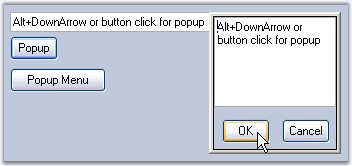

The following topics will help you become more familiar in using the PopupControlContainer control.
We can enable scrollbars automatically for the PopupContainer control, when its items are shown beyond its size by setting AutoScroll to true. When AutoScroll is enabled for the control, we can set the margin and logical size for the autoscroll region by AutoScrollMargin and AutoScrollMinSize properties.
|
PopupControlContainer Properties |
Description |
|
AutoScroll |
It indicates whether Scrollbars will automatically appear if controls are placed outside the form's client area. |
|
AutoScrollMargin |
It sets margin around the controls during AutoScroll. |
|
AutoScrollMinSize |
It sets the minimum logical size for the AutoScroll region. |
|
[C#]
this.popupControlContainer1.AutoScroll = true; this.popupControlContainer1.AutoScrollMargin = new System.Drawing.Size(2, 2); this.popupControlContainer1.AutoScrollMinSize = new System.Drawing.Size(3, 3); |
|
[VB.NET]
Me.popupControlContainer1.AutoScroll = True Me.popupControlContainer1.AutoScrollMargin = New System.Drawing.Size(2, 2) Me.popupControlContainer1.AutoScrollMinSize = New System.Drawing.Size(3, 3) |
When a PopupControlContainer control is associated as the popup for a control, by default, the pop-up will hide when the user clicks anywhere outside the pop up besides the control (if any) that is specified in the "ParentControl" property. To control this default behavior, i.e, to display the popup even if there is any mouse actions, set IgnoreMouseMessages property to true.
Example
The Popup of a textbox, on a button click should be
closed only when the textbox is not empty. For this purpose, the popup should
not be closed on any mouse action. So set IgnoreMouseMessages property to true
for this property.
|
[C#]
this.popupControlContainer1.IgnoreMouseMessages = true;
private void button1_Click(object sender,EventArgs e) { // Hides the PopupControlContainer under a button click. if(txtbox.Text!="") { this.popupControlContainer1.HidePopup(PopupCloseType.Done); } } |
|
[VB.NET]
Me.popupControlContainer1.IgnoreMouseMessages = True
Private Sub button1_Click(sender as Object,e as EventArgs) 'Hides the PopupControlContainer under a button click. If Not txtbox.Text = "" Then this.popupControlContainer1.HidePopup(PopupCloseTypes.Done) End Sub |
If you want more control over this behavior, then you will have to implement the IPopupParent interface and set the PopupParent property in the PopupControlContainer.
A sample which illustrates the IPopupParent interface is available in the below sample installation location.
..\My Documents\Syncfusion\EssentialStudio\Version Number\Windows\Tools.Windows\Samples\2.0\Editors Package\Container controls\PopupContainer\PopupsInDepth

Figure 382: Custom Popup using IPopupParent
Key navigation
When the pop-up is visible, the PopupControlContainer will look for Alt, Enter, Tab, Esc, F4, and F2 keys and either cancel or close the pop-up. In order to navigate, the PopupControlContainer's IgnoreDialogKey property must be set to true.
|
[C#]
this.popupControlContainer1.IgnoreDialogKey = true; |
|
[VB.NET]
Me.popupControlContainer1.IgnoreDialogKey = True |
Hiding popup with PopupCloseType mode
We can hide the popup using HidePopup method in PopupCloseType mode.
To hide the popup with the changes applied to the popup, PopupCloseType should be set to Done. To cancel the changes, PopupCloseType should be set to Canceled. Setting PopupCloseType to Deactivated will deactivate the popup when the user clicks in different application.
We can place the ComboBoxBase control within PopupControlContainer such that the PopupControlContainer does not close when the ComboBoxBase's Popup is displayed.
You can do this by deriving from the PopupControlContainer, overriding the OnPopup method, and setting the focus to the derived control. This will ensure that the derived PopupControlContainer does not lose focus and close prematurely. The customized PopupControlContainer code should be like the code snippet shown below.
|
[C#]
public class CustomPopupControlContainer : Syncfusion.Windows.Forms.PopupControlContainer { public CustomPopupControlContainer() {
} public CustomPopupControlContainer(IContainer container):this() { container.Add(this); }
protected override void OnPopup(EventArgs args) { base.OnPopup(args); this.Focus(); } } |
|
[VB.NET]
Public Class CustomPopupControlContainer Inherits Syncfusion.Windows.Forms.PopupControlContainer Public Sub New() End Sub Public Sub New(ByVal container As IContainer) : Me() container.Add(Me) End Sub
Protected Overrides Sub OnPopup(ByVal args As EventArgs) MyBase.OnPopup(args) Me.Focus() End Sub End Class |
It is also necessary to specify the parent-child relationship between the ComboBoxBase’s pop-up and the PopupControlContainer. This can be done by handling the ComboBoxBase’s drop-down event as shown in the code sample below.
|
[C#]
private void comboBoxBase1_DropDown(object sender, System.EventArgs e) { /* Setup the relationship between the ComboBoxBase’s dropdown and it's parent PopupControlContainer, so that the pop-up will not close when the ComboBoxBase’s dropdown is shown */
this.comboBoxBase1.PopupContainer.PopupParent = this.popupControlContainer1; this.popupControlContainer1.CurrentPopupChild = this.comboBoxBase1.PopupContainer; } |
|
[VB.NET]
Private Sub comboBoxBase1_DropDown(ByVal sender As Object, ByVal e As System.EventArgs) ' Setup the relationship between the ComboBoxBase’s dropdown and it's parent ' PopupControlContainer, so that the pop-up will not close when the ComboBoxBase’s ' dropdown is shown Me.comboBoxBase1.PopupContainer.PopupParent = Me.popupControlContainer1 Me.popupControlContainer1.CurrentPopupChild = Me.comboBoxBase1.PopupContainer End Sub |